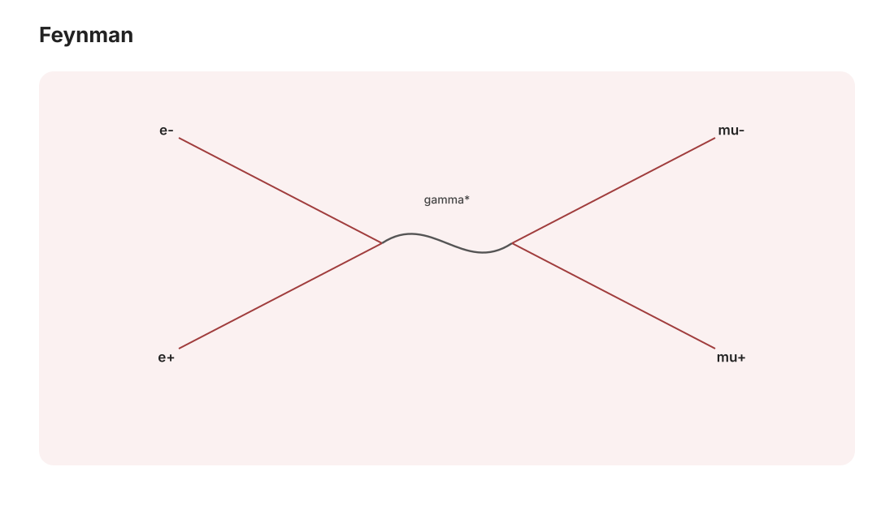

场论 II · 相互作用与 Feynman 图
对标：Peskin & Schroeder §4 ｜ 前置：qft-01、qm-04（微扰论）、aqm-02（散射语言） 自由场只会独奏；加上相互作用项，场论开始"算物理"。本页把微扰展开机械化为 Feynman 图：内线 = 传播子、顶点 = 耦合、对一切图求和——二十世纪物理最成功的计算技术，QED 由此算到小数点后十位。

1. 相互作用绘景与 Dyson 展开
加相互作用 \(\mathcal L_{int}\)（样板：\(-\frac{\lambda}{4!}\phi^4\)；QED：\(-e\bar\psi\gamma^\mu\psi A_\mu\)）。散射矩阵：
【骨架】 相互作用绘景（qm-04 含时微扰的场版）：自由部分吃进场的演化、\(\mathcal L_{int}\) 逐阶展开——时序指数即 Dyson 级数。\(\blacksquare\) 展开参数：QED 的 \(\alpha \approx \frac{1}{137}\)（qm-04 登基的常数在此就业）——小耦合使逐阶计算收敛得极快（微扰论成功的物理前提；强耦合世界见 §4 诚实边界）。
Wick 定理【陈述 + 机理】：自由场的时序乘积 = 全部"两两配对"（缩并 = 传播子 \(D_F\)）之和——高斯型理论的组合恒等式（概率的 Isserlis/Wick 定理同名同物：高斯矩 = 配对求和，概率线的老朋友）。每种配对方式 ⇒ 一张图：Feynman 图是 Wick 组合学的记账法。
2. Feynman 规则（\(\phi^4\) 样板）
动量空间规则：
| 图元 | 因子 |
|---|---|
| 内线 | \(\dfrac{i}{k^2 - m^2 + i\epsilon}\)（qft-01 传播子） |
| 顶点（四线交汇） | \(-i\lambda\)、动量守恒 \(\delta^4\) |
| 圈 | \(\int\frac{d^4\ell}{(2\pi)^4}\)（未定动量全积——qft-03 的火药桶） |
| 对称因子 | 组合计数修正 |
画图 → 查表 → 乘起来 = 振幅；截面由 \(|\mathcal M|^2\) × 相空间（aqm-02 的 \(\frac{d\sigma}{d\Omega}\) 语言 + sr-01 四动量守恒）。树图 = 经典级（\(\hbar\) 展开的首阶）、圈图 = 量子修正——"量子涨落"在图语言里就是圈。
QED 规则速览：电子线（Dirac 传播子）、光子线、唯一顶点 \(-ie\gamma^\mu\)（三线：两费米一光子）——一个顶点生成全部电磁现象：Compton 散射、\(e^+e^-\to\mu^+\mu^-\)、韧致辐射……全是同一顶点的不同拼法（树级计算属 P&S §5 的标准作业【引用】）。
3. 虚粒子与"力"的图景
内线粒子不满足 \(k^2 = m^2\)（离壳/虚粒子——只是积分变量的名字，不是"真的粒子短暂违法"：拟人化止步于此）。静态极限对账（qft-01 §4 的完成式）：两费米子交换光子的树图 ⇒ Coulomb 势；交换有质量标量 ⇒ Yukawa 势——"相互作用 = 交换规范玻色子"从口号变成可计算命题（pp-01 把它升为组织原理）。
QED 的战绩单：电子反常磁矩 \(g - 2\)——图逐阶算：\(\frac{g-2}{2} = \frac{\alpha}{2\pi}\)（Schwinger 单圈，衣袖级推导【引用】）+ 高阶……理论与实验吻合到 \(10^{-12}\) 量级——人类最精确的理论-实验对表；Lamb 位移（qm-04 表中的那行）同账房出品。
4. 诚实边界（本页的第二档标注）
树图与单圈结构属【推导/骨架】可信区；圈积分发散的系统处理（正规化 + 重整化）在下一页以【骨架】呈现；强耦合（QCD 低能、临界现象的定量）微扰论失效——格点场论（comp-01 的路径积分蒙卡）与 RG（asm-03/qft-03）接管：知道微扰论的失效边界与知道它的规则同等重要。
5. 练习与要点
例 1（Wick 计数练手） \(\langle T\phi_1\phi_2\phi_3\phi_4\rangle\) 自由场：三种配对 \(D_{12}D_{34} + D_{13}D_{24} + D_{14}D_{23}\)——高斯四阶矩公式（概率线 Isserlis）逐字重现；画出三张对应图。
例 2（图数阶数） \(\phi^4\) 理论 \(2\to2\) 散射：树图 1 张（\(s,t,u\) 三通道合一顶点）、单圈 3 张——按 \(\lambda\) 计阶、按圈计 \(\hbar\)：微扰记账的基本功。
例 3（Yukawa 对账重做） 用规则写两核子交换 \(\pi\) 介子（质量 \(m_\pi \approx 140\) MeV）的树图振幅 → 傅里叶回位置空间得力程 \(\frac{\hbar}{m_\pi c} \approx 1.4\) fm——汤川 1935 年由核力力程反推介子质量的原始逻辑，一页纸重走（aqm-02 例 2 + qft-01 §4 的三线会师）。\(\blacksquare\)
下一页：直面无穷大——路径积分表述与重整化【骨架】：发散不是灾难而是"有效理论"的宣言，场论三页收官。